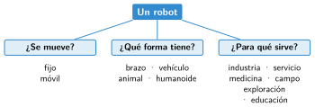
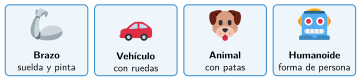

Clasificación de los robots
🤔 Pienso5 min
Qué hago aquí: Piensa un momento y contesta con lo que ya sabes. No pasa nada si no lo sabes: es para empezar.
Haz dos grupos con estos robots y ponle nombre a cada grupo: brazo que pinta coches, robot aspirador, dron, robot que ordeña, perro robot, robot de cirugía.
📖 Leo y aprendo15 min
Qué hago aquí: Lee despacio, mira los dibujos y los ejemplos, y quédate con la idea clave del final.
Hay muchos robots distintos. Para ordenarlos nos hacemos tres preguntas.


✏️ Hago25 min
Qué hago aquí: Haz las actividades en orden. Empieza siempre por las básicas.
¿Fijo o móvil? a) Robot aspirador b) Brazo que pinta coches c) Dron
Escribe el nombre de cada forma: con forma de persona, con forma de animal, con forma de coche.
Clasifica estos robots.
| Robot | ¿Se mueve? | ¿Forma? | ¿Para qué? |
|---|---|---|---|
| Dron de reparto | |||
| Perro robot | |||
| Robot que ordeña |
Clasifica el robot que usarás en clase (mBot o Nezha).
✏️ Puedes responder escribiendo, con un dibujo o un esquema, o contándolo en voz alta.
🚀 Amplío (si quieres saber más)
Qué hago aquí: ¿Has terminado? Lee la curiosidad o elige el reto. Es voluntario.
Inventa un robot con forma de animal para explorar un lugar difícil. ¿Qué animal imita? ¿Por qué esa forma le viene bien?
✅ Compruebo5 min
Qué hago aquí: Contesta sin mirar la ficha y marca cómo lo llevas.